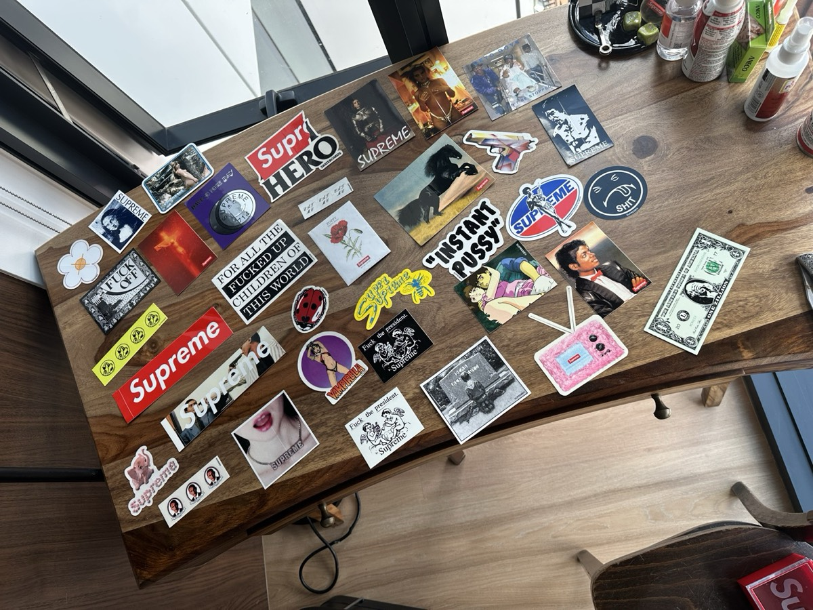
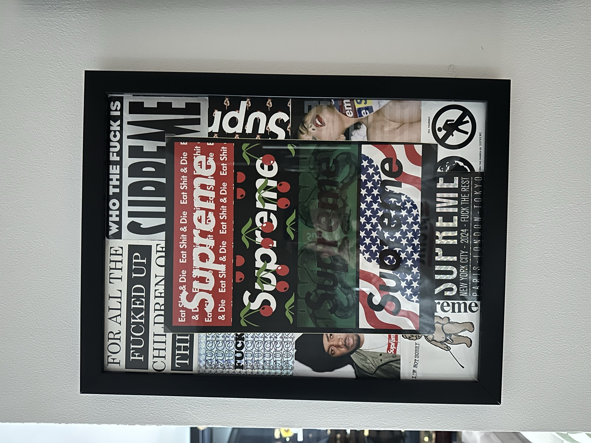
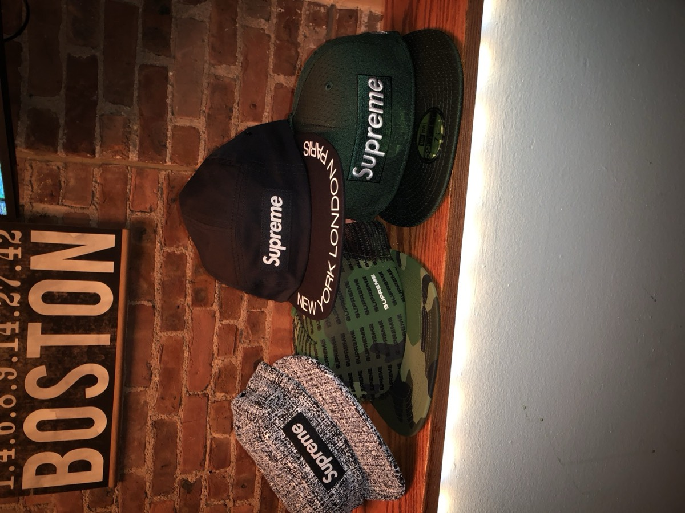

An actual collection
Thousands of reference points and hundreds of photographs—not a dropship catalog or anonymous storefront.
About Us
Never Miss Out is built around our private archive, our eye for presentation, and a network that helps people locate the things they thought they missed.
 Collector · Creator · Connector
Collector · Creator · ConnectorThe story
We do not simply keep rare pieces. We study them, organize them, display them, and find new ways to help other collectors experience what they love.
The collection includes stickers, apparel, sneakers, pins, books, promotional materials, framed displays, and original collage work. We create the artwork and build our sourcing service through relationships with collectors, sellers, specialists, and people who know how to get things done.
Never Miss Out is the front door to that collection, creative point of view, and trusted network.
What we bring
Thousands of reference points and hundreds of photographs—not a dropship catalog or anonymous storefront.
Original collage work, framed arrangements, layered displays, and an instinct for how collections should live in a room.
Relationships with collectors and people who can help identify, locate, frame, display, buy, or sell unusual pieces.
Every request, sale, and commission is discussed directly. No automated availability claims and no anonymous checkout.
Why Never Miss Out
Supreme is a major part of the archive, but it is not the identity of the business. Never Miss Out can serve streetwear, sneakers, artwork, collectibles, personal memories, and future categories without belonging to any brand it features.



Shop what is available, explore the private collection, request what you cannot find, or commission something that does not exist yet.